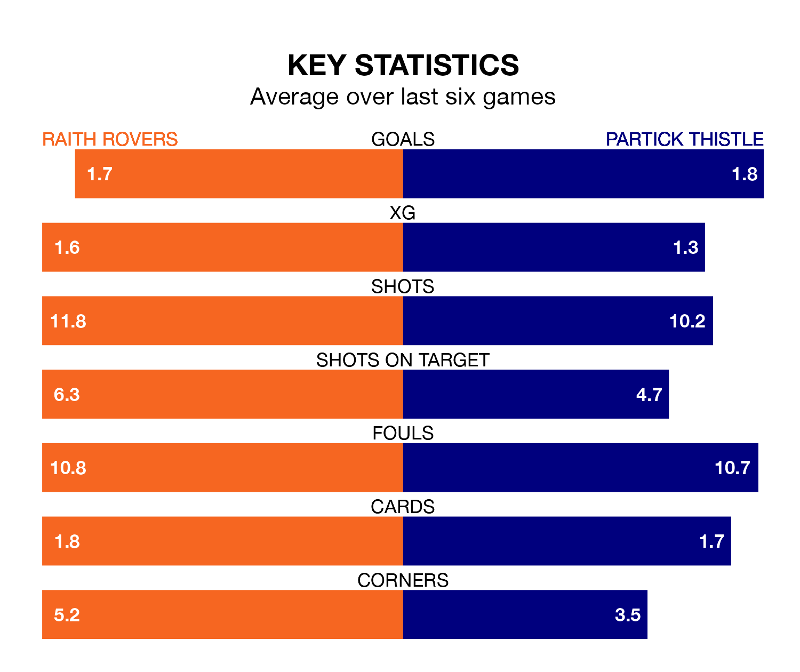

Two of Scottish Championship's top sides face each other at Stark's Park in Friday's late kick-off, when second-placed Raith Rovers host third-placed Partick Thistle.
Raith have picked up nine wins and three draws from 13 games so far this season, and sit five points above the visitors going into the 7.45pm match.
Thistle, meanwhile, have won seven and drawn four of 14, picking up 25 points.
With 28 goals in 14 games so far this season, Partick Thistle are the league's second-highest scorers with 2.0 goals per game. But they are conceding more than average too, letting in 21 goals at a rate of 1.5 per game.
Raith are also above average scorers, with 1.7 goals per game, compared to a league average of 1.4. They have conceded 1.1 goals per game.
In Brian Graham, Thistle have the league's sharpest shooter so far this season. He has notched seven goals in 13 appearances.
His goal rate of one every 151 minutes is slightly quicker than that of Lewis Vaughan, Rovers' top scorer with a goal every 141 minutes, and a total of six goals in 13 games.
In the last 10 years, Raith and Partick Thistle have played each other on 10 occasions. Raith won four of them, Partick Thistle three, and they drew three times.
On average, Raith scored 1.4 goals and Thistle 1.3 in those matches.
Their last meeting was on August 5, when they played out a 2-2 draw.
The hosts are in good form in Scottish Championship, with four wins and two draws from their last six games.
With three wins and two draws over that period, the away side's form is worse – they have taken 11 points from 18, compared to Raith's 14.
Raith's last match was on Saturday, a 2-1 win against Inverness CT, with James Gullan and Vaughan getting the goals for Raith.
Partick Thistle beat Airdrieonians 2-1 last time out, also on Saturday, with Callum Fordyce (own goal) and Ricco Diack on the scoresheet.
